Figure: Diagram supporting the preceding content.
Review: From Cables to Connections
Two key components:
Layer 2 Focus
Cables carry bits, but NICs and switches work with frames and MAC addresses.
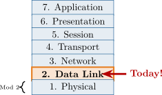
Figure: Diagram supporting the preceding content.
After completing this module, you will be able to:
This section introduces network interfaces and transceivers, the hardware endpoints that connect hosts to Ethernet networks and expose physical and data-link functions.
What is a Network Interface Card (NIC)?
NIC Responsibilities
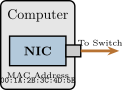
Figure: Diagram supporting the preceding content.
Key Point
Without a NIC, your computer is an island—no network access!
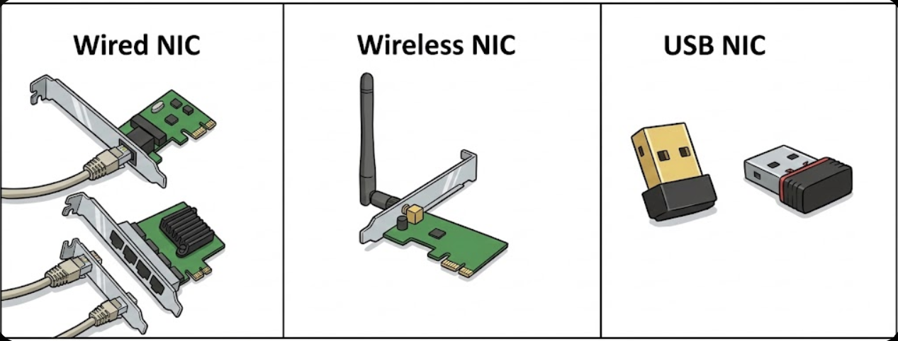
Examples of different network interface cards showing various form factors and connector types.
NIC Features and Specifications
Auto-Negotiation
NICs automatically negotiate the best speed and duplex with the switch. Usually “just works”!
| NIC Type | Typical Use |
| 1 Gbps RJ-45 | Desktops, laptops |
| 10 Gbps RJ-45 | Workstations |
| 10 Gbps SFP+ | Servers |
| 25/100 Gbps | Data centers |
Dual-Port NICs
Servers use multiple NIC ports for:
Why Transceivers Matter
Without a transceiver, your switch can’t understand fiber optic light signals—it only speaks electrical!
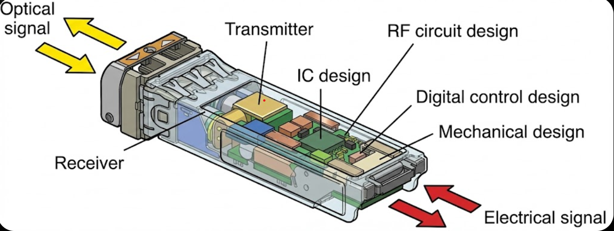
Key Components
Laser/LED: Converts electrical → light Photodetector: Converts light → electrical Circuit board: Manages the conversion
| Transceiver | Speed | Cable Type | Connector | Distance |
| SFP | 1 Gbps | MMF or SMF | LC | 550m (MMF) |
| 10km (SMF) | ||||
| SFP+ | 10 Gbps | MMF or SMF | LC | 300m (MMF) |
| 10–80km (SMF) | ||||
| QSFP | 40 Gbps | MMF or SMF | MPO/MTP | 100m (MMF) |
| 10km (SMF) | ||||
| QSFP28 | 100 Gbps | MMF or SMF | MPO/MTP | 100m (MMF) |
| 10km (SMF) | ||||
| GBIC | 1 Gbps | MMF or SMF | SC | 550m (MMF) |
| (legacy) | 10km (SMF) | |||
| SFP-T | 1 Gbps | Copper (UTP) | RJ-45 | 100m |
| SFP+ DAC | 10 Gbps | Twinax copper | Integrated | 3–7m |
MMF = Multimode Fiber SMF = Single-mode Fiber DAC = Direct Attach Cable.
Always match transceiver type to cable type and required distance.
Layer 1: Physical Infrastructure at the Green Dragon
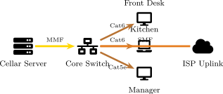
Figure: Diagram supporting the preceding content.
Layer 1 maps physical links between endpoints, switching infrastructure, and uplinks.
Mismatch Issues
Vendor Lock-In
Some manufacturers only accept their own branded transceivers. Third-party modules are cheaper but may not work.
Signal Strength Issues
Troubleshooting Tip: Transceivers
Transceiver compatibility
Fiber type (MMF vs SMF)
Cable distance vs. transceiver rating
Here we examine Ethernet frame structure and MAC addressing, which form the basis of Layer 2 switching decisions and local delivery.
Figure: Diagram supporting the preceding content.
Header Fields
Preamble: Synchronization bits Dest/Src MAC: Who it’s going to/from Type: What protocol is inside
Trailer Field
FCS (Frame Check Sequence): Error detection—receiver recalculates to verify frame wasn’t corrupted.
MAC vs IP
MAC = permanent hardware address (Layer 2). IP = changeable logical address (Layer 3).
Figure: Diagram supporting the preceding content.
Common Formats
00:1A:2B:3C:4D:5E (colons) 00-1A-2B-3C-4D-5E (dashes) 001A.2B3C.4D5E (dots—Cisco)
Figure: Diagram supporting the preceding content.
Example OUIs
00:50:56 = VMware 00:0C:29 = VMware (alternate) 00:1A:A0 = Dell
Special MAC Addresses
Broadcast: FF:FF:FF:FF:FF:FF Goes to ALL devices on the network.
Multicast: Starts with 01:00:5E Goes to a group of devices.
Can MACs Be Changed?
Yes! Software can “spoof” a different MAC. Useful for troubleshooting, but also a security concern.
Case Study: Sam’s First NIC Installation
Case Study: Sam’s First NIC Installation
Samwise Gamgee is setting up the new admin burrow network for the Shire. He
purchases 10 Gbps NICs for the hobbit-hole workstations, but the switches only
have SFP ports (1 Gbps, not SFP+).
Sam also notices one workstation showing a MAC address of 00:00:00:00:00:00 in the network settings.
Review Questions
Will the 10 Gbps NICs work in the 1 Gbps switch ports?
What speed will the connection actually operate at?
What might cause a MAC address of all zeros?
Case Study Solution: Sam’s First NIC Installation
Solution: Sam’s First NIC Installation
Yes—10 Gbps NICs will auto-negotiate down to match the switch’s 1 Gbps capability.
The connection will operate at 1 Gbps—limited by the slower device (the switch).
All-zeros MAC address typically means:
Key Lessons
This section compares hub-, bridge-, and switch-based forwarding and explains how modern switches learn and forward traffic efficiently.
The Core Problem
How do we connect multiple devices efficiently without wasting bandwidth or causing collisions?
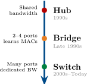
Figure: Diagram supporting the preceding content.
Why Hubs Are Obsolete
10 devices on a 100 Mbps hub = roughly 10 Mbps each (minus collision overhead). Terrible!
Figure: Diagram supporting the preceding content.
Hub = Layer 1
Hubs operate at the Physical layer—they don’t understand MAC addresses.
Bridges: Learning MAC Addresses
Bridge = Layer 2
Bridges read MAC addresses and make forwarding decisions—smarter than hubs!
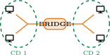
Figure: Diagram supporting the preceding content.
Selective Forwarding
Traffic between L1 and L2 stays on the left—the bridge doesn’t forward it right.
Bandwidth Advantage
A 24-port Gigabit switch = up to 24 Gbps total capacity (each port gets full 1 Gbps).
Figure: Diagram supporting the preceding content.
Switch = Layer 2
Like bridges, switches read MAC addresses—but with many more ports and better performance.
How Switches Learn and Forward
The Four Switch Actions
Learning: See source MAC → record which port it came from
Forwarding: Know destination MAC → send only to that port
Flooding: Unknown destination → send to ALL ports (except source)
Filtering: Same-segment traffic → don’t forward
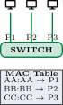
Figure: Diagram supporting the preceding content.
MAC Address Table
The switch builds a table mapping MAC addresses to ports. This is how it knows “who is where.”
Layer 2: MAC Address Communication at the Green Dragon
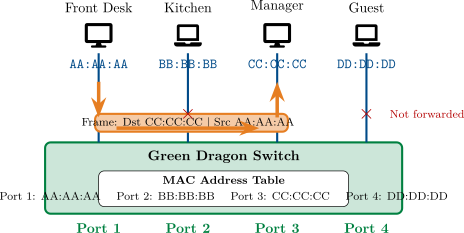
Figure: Diagram supporting the preceding content.
Layer 2 uses MAC addresses to forward frames. The switch sends traffic only to the destination port—not everywhere.
This section focuses on operational switch features and management choices used in real deployments.
Unmanaged Switch
Smart Switch
Managed Switch
Key Question
Do you need to separate traffic, monitor performance, or configure security? If yes → managed switch.
Layer 2 Switch (Standard)
Figure: Diagram supporting the preceding content.
Layer 3 Switch (Multilayer)
Figure: Diagram supporting the preceding content.
When to Use Layer 3 Switches
Large networks with multiple VLANs benefit from Layer 3 switches—inter-VLAN traffic stays fast without bottlenecking through a router.
Switch Interface Configuration Basics
Access Methods
Common Settings
Speed/Duplex Mismatch
If one side is set to auto and the other is manually configured, they may negotiate incorrectly. Result: slow speeds, errors, packet loss.
Port Security
Limit which MAC addresses can connect to a port:
Case Study: The Green Dragon Inn Network
Case Study: The Green Dragon Inn Network
The Green Dragon Inn is expanding and needs a network for guest hobbits and
staff. Frodo suggests a cheap unmanaged switch. Gandalf recommends a managed
switch instead.
The network requirements:
Review Questions
Which switch type should they choose and why?
What feature would separate guest from staff traffic?
Why is remote management valuable for an inn?
Case Study Solution: The Green Dragon Inn Network
Solution: The Green Dragon Inn Network
Managed switch—unmanaged switches cannot separate traffic or be configured remotely.
VLANs (Virtual LANs) separate guest and staff traffic logically on the same physical switch.
Remote management benefits:
Key Lesson
The extra cost of managed switches pays off in flexibility and security. For any business network, managed is the right choice.
Advanced switching capabilities improve resiliency, bandwidth utilization, and loop prevention in larger networks.
Link Aggregation and NIC Teaming
Benefits
More bandwidth: 4 × 1G = 4 Gbps total Redundancy: If one link fails, others continue
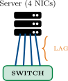
Figure: Diagram supporting the preceding content.
Both Ends Must Match
LAG must be configured on both the switch AND the server/other switch.
Maximum Transmission Unit (MTU)
Critical Requirement
Every device in the path must support the same MTU! Mismatched MTU causes fragmentation or dropped packets.
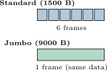
Figure: Diagram supporting the preceding content.
When to Use Jumbo Frames
Spanning Tree Protocol: The Problem
Real Danger
An accidental loop can crash an entire network in under 30 seconds!
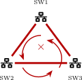
Figure: Diagram supporting the preceding content.
Symptoms
All switch LEDs flashing rapidly, network unresponsive, high CPU on switches.
Spanning Tree Protocol: The Solution
STP Versions
802.1D (STP): Original, slow (30–50 sec) 802.1w (RSTP): Rapid, fast (1–2 sec) 802.1s (MSTP): Per-VLAN spanning trees
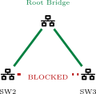
Figure: Diagram supporting the preceding content.
Key Insight
STP provides redundancy WITHOUT loops—blocked ports wait as backups.
Power Budget
Switches have a total PoE power budget (e.g., 370W). Plan carefully—you can’t power unlimited devices!
| Standard | Power | Devices |
| 802.3af | 15.4W | IP phones |
| 802.3at (PoE+) | 30W | Cameras, APs |
| 802.3bt (PoE++) | 60–100W | PTZ cameras |
PoE Advantage
Figure: Diagram supporting the preceding content.
Power over Ethernet: Green Dragon Power Budget
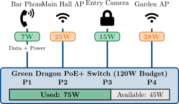
Figure: Diagram supporting the preceding content.
PoE delivers data and power over one cable. Always track your power budget—the switch has limits!
Case Study: Bilbo’s Birthday Party Network Disaster
Case Study: Bilbo’s Birthday Party Network Disaster
Bilbo is hosting his 111th birthday party and needs a network for the event
planners. Shortly after setup, the entire network crashes—all switches show
frantically blinking lights, and no device can communicate.
Merry investigates and discovers someone connected both ends of a patch cable to the same switch to “make the cables neater.”
Review Questions
What has happened to the network?
What protocol should have prevented this?
What should they check on the switches?
Case Study Solution: Bilbo’s Birthday Party Network Disaster
Solution: Bilbo’s Birthday Party Network Disaster
A switching loop caused a broadcast storm—frames multiplied until they overwhelmed every switch.
Spanning Tree Protocol (STP) should block redundant paths automatically.
Immediate actions:
Key Lesson
Always use managed switches with STP enabled for any business network. A single accidental loop can take down everything!
The final section applies structured troubleshooting to interface and switch faults using indicators, commands, and counter analysis.
Hardware Failure and Port Status Indicators
LED Indicators
First Troubleshooting Step
Always look at the lights! LEDs tell you port status instantly without logging in.
Common Hardware Failures
No Link Light?
Check in order: cable → NIC → switch port → transceiver (if applicable).
Essential Commands
show interfaces Port status, speed, duplex, errors
show mac address-table Which MACs learned on which ports
show spanning-tree STP status, root bridge, blocked ports
show power inline PoE status and power consumption
Example Output
Switch# show interfaces Gi0/1 GigabitEthernet0/1 is up Speed: 1000 Mbps, Duplex: Full Input errors: 0, CRC: 0 Output errors: 0, Collisions: 0
Key Insight
These commands work on Cisco and many other managed switches. Learn them once, use them everywhere.
Error Types
CRC errors: Damaged frames—bad cable, NIC, or interference.
Collisions: Duplex mismatch or hub in path.
Runts: Frames too small (<64 bytes)—collision fragments.
Giants: Frames too large—MTU mismatch.
Input/Output Errors
Input errors: Problems receiving frames.
Output errors: Problems sending frames.
Discards: Frames dropped (buffer full, policy).
Interpretation
A few errors = normal. Rapidly increasing = active problem!
Pro Tip
Clear counters, wait 5 minutes, check again. If errors accumulate quickly, investigate that port.
MAC Address Table Troubleshooting
Command
show mac address-table
Example Output
VLAN MAC Address Port –– –––––- –– 1 00:1A:2B:3C:4D:5E Gi0/1 1 00:50:56:AA:BB:CC Gi0/2 1 FF:FF:FF:FF:FF:FF CPU
MAC Flapping
Same MAC appearing on multiple ports rapidly = possible loop or duplicate MAC address.
Common PoE Issues
Troubleshooting Steps
Verify switch supports PoE
Check total power budget remaining
Verify cable uses all 4 pairs
Check device PoE class requirements
Try known-good cable and port
| PoE Class | Max Power |
| Class 0 | 15.4W (default) |
| Class 1 | 4.0W |
| Class 2 | 7.0W |
| Class 3 | 15.4W |
| Class 4 | 30W (PoE+) |
Cable Matters!
PoE requires all 4 pairs. A cable that “works for data” may fail for PoE if pairs are damaged.
Key Concepts:
Configuration & Troubleshooting:
This module explored Layer 2 networking devices and protocols. You learned about NICs, transceivers, MAC addresses, Ethernet frames, and the evolution from hubs to bridges to switches. You also examined switch configuration, advanced features (VLANs, link aggregation, STP, PoE), and troubleshooting techniques. In the next module, we’ll move up to Layer 3 and explore IP addressing and subnetting.